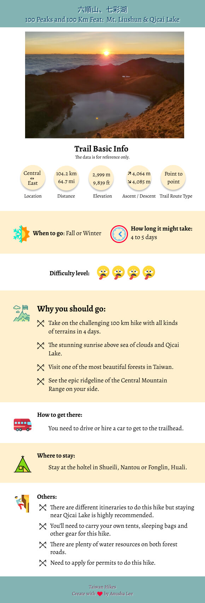

100 Peaks and 100 Km Feat: Stunning Sunrise from Qicai Lake and Sea of Clouds around Mt. Liushun
Posted by: Anusha Lee
Published date: May 26, 2021

Disclaimer: Please note some of the following are based on my personal condition, and I will try to provide the latest and correct information as possible as I can. Please feel free to let me know if I make any mistake and thank you for reading. Please also note that your safety is your own responsibility.
Warning: This is a super long post about 10,000+ words and the estimated reading time is 50 minutes.
This is my first 4-day and 100-km hike, and I also realize that there is so much about the history behind this trail. If you are only interested in the hiking part, you can skip About section and jump to How to Get There or Peaks to Reach.
100 Peaks in Taiwan: Topographic profile of Mt. Liushun and Qicai Lake, 100 km hike. Image from SunRiver Culture Co., Ltd.
Moreover, this is a cross Central Mountain Range 中央山脈 hike. It was a daunting task, but I am very proud that I finished this long distance hike in awe, in pain and in tears. Hope you enjoy this post and thank you very much for reading!
Mt. Liushun and Qicai Lake trail is a cross Central Mountain Range hike. Image from Google Maps.
About Danda Forest Road, Sunhai Bridge, Mt. Liushun, Qicai (aka Cicai) Lake, and Bunun People
Once upon a time, hikers or tourists could just drive or take a bus to Qicai Lake and hiked Qicai and Mt. Liushun within one day or two, but not anymore. It will never be in the future, either. Now it has become a 100+ km journey. Let’s begin.
Danda Forest Road and Logging History
Danda 丹大 is located in Xinyi Township, Nantou County 南投縣信義鄉, and also the river source of Zhuoshui River 濁水溪. Foresty Bureau established Danda Major Wildlife Habitat 丹大野生動物重要棲息環境 on February 15, 2000, and this area is under Nantou Forest District Office of Forestry Bureau 林務局南投林區管理處. Only local indigenous people, and Foresty Bureau and Taipower staff are allowed to enter this area and by vehicles. Other people need to apply for permits.
One section of Danda Forest Road
The total length of Danda Forest Road is 62 km (38.5 miles). The old name of Danda Forest Road was Sunhai Forest Road 孫海林道, and it was built by a lumber businessman Sun Hai in 1957 to transport lumber. Mt. Sun acquired the timber right of 5,000 hectares (12,355 acres) of Danda forest in 1958, and the area was about the size of 9,300 football fields. In his heyday, his company Zenchang 振昌興業 hired more than 2,000 people, 60% of the population in a logging town, Checheng 車埕, working for him. His company was also the first one that exported Taiwan Cypress to Japan.
The biggest Torii Gate located at Meiji Jingu Shrine in Toykeo was exported from Taiwan by Mt. Sun. He found several huge timers, and the one used at the shrine was 1,500 years old and sold it to Japan in 1970. Here is what the Torii Gate looks like.
In 1990, Taiwan government changed its policies, banned logging and focused more on preserving the environment. According to the program, Our Island On Taiwan Public Television Service, around 14,350 hectares (35,460 acres) of total 42,282.77 hectares (104,483 acres) Danda forest had been lost due to logging industry and agriculture activities. 1/3 of Danda forest is gone, equal to 26,691 football fields. However, illegal logging is still a serious issue in this area and other forests in Taiwan.
Sunhai Bridge
Mr. Sun Hai built a bridge above Zhuosui River to transport timbers, and as you can guess the bridge is called Sunhai Bridge 孫海橋. This bridge was a wooden structure when it was first built in 1957, and it was the only passage for Danda area to connect to the outside world. Nantou County government rebuilt this bridge into a concrete one in 1969, and it was also the end of Provincial Highway 16 台16線.
Where Sunhai Bridge was located.
However, Typhoon Mindulle 敏督利 destroyed Danda Forest Road and Sunhai Bridge in 2004. After evaluation, Executive Yuan decided not to rebuild Sunhai Bridge, but Bunun people still needed to visit their ancestors’ sacred place and Taipower staff needed to maintain the transmission towers through Danda Forest Road. So, the government built Danda Suspension Bridge 丹大吊橋 and only motorbikes are allowed to pass.
Those are the only things left from Danda Suspension Bridge.
Nevertheless, Typhoon Sinlaku 辛樂克 destroyed Danda Suspension Bridge again in 2008. Since then, Bunun people, Foresty Bureau and Taipower staff relied on pulley to cross the river. Later, Taipower Company built temporary steel bridge to maintain the transmission towers. On March 31, 2021, Taipower removed the bridge because of the rain season. Hikers will have to cross the river on feet if the water level isn't too high.
Our hired cars were crossing the temporary steel bridge. Photo by Mingshu 連明樹.
Forest Bureau decided to close this trail for the safety reasons after 2004 and also hoped to prevent illgal logging from happening. Therefore, there was a period of time that hikers had to play cat and mouse game by hiking the sidehill and bypass to avoid being caught. Finally, Forest Bureau opened up Dadan Forest Road again in 2018, and only vehicles, hikers and cyclists with permits can visit this beautiful place.
As to Sunhai Bridge, the government has announced that there is no plan to rebuild it in the near future.
Indigenous Bunun People
The indigenous people who have lived here for generations are Bunun people. Living on both sides of the Central Mountain Range, they are also the ethnic group living at the highest elevation among all Taiwan’s indigenous peoples, at the elevation between 500 to 1,500 meters. They once said the upstream of Zhuosui River is the origin of Bunun’s culture.
After Japanese Occupation and some policies from ruling parties, many younger Bunun are losing touch with their cultures and customs. Therefore, Bunun people start the journey to seek their roots and visit their old homes where their ancestors had been buried in remote Danda area. This ritual is similar to Han people’s tomb sweeping to remember and honor the deceased.
One thing worth mentioning is Bunun’s Pasibutbut 祈禱小米豐收歌 or 八部合音, a very famous Bunun traditional ritual music, and it is sung to pray for good millet harvest during sowing, harvesting and storage. Due to copyright, I can’t play video clips here, but you can search Pasibutbut or check out Nantou Xinyi Bunun Culture Association 南投信義布農文化協會 for details. Or you can listen to some audio clips of a famous choir, Voice of Bunun Lileh 布農 Lileh 之聲, on Wind Music 風潮文化 website.
Mt. Liushun: The 100 Peaks That Is Less Than 3,000 Meters above the Sea Level
When speaking of 100 Peaks in Taiwan, most people probably will think it’s for sure those mountains are over 3,000 meters above the sea level. However, two of those mountains are actually less than 3,000. The first one is Mt. Lu 鹿山 2,981 meters (9,780 feet) on Mt. Yu Range, and the second one is Mt. Liushun 六順山 2,999 meters (9,839 feet) on the Central Mountain Range.
Me taking a selfie at the peak of Mt. Liushun
Liu 六 in Chinese means six and Shun 順 means things go well or smoothly. The trail to Mt. Liushun is mostly on the ridgeline and hikers have to go up and down 6 times in order to reach the peak. Therefore, some hikers teased that this was how the name Liushun came from.
Hiking to the peak of Mt. Liushun isn’t easy. Hikers have to “swim” in the endless bamboo woods on the ridgeline, taking the risks that the bamboos might poke into your eyeballs, but the views from both sides are so rewarding.
So, the question is why Mt. Liushun is still listed as one of the 100 Peaks if her height is less than 3,000 meters? Long story short, the topographic map first used by the first group of hikers to Mt. Liushun was made in 1957. The techniques have been improved a lot over the past few decades, and the height of Mt. Liushun was revised to 2,999 meters (9,839 feet) in 1987. You can read Sunriver Culture's post for more details.
Qicai Lake: It Could Be Reached in One Day, but Not Anymore
Qicai Lake or Cicai Lake 七彩湖, meaning “seven colors or seven colorful” lake in Chinese, at an elevation of 2,900 meters (9,514 feet) is the third highest mountain lake, and the second deepest one (the maximum depth is 8 meters, but some said 10 meters) in Taiwan. The deepest lake in Taiwan is Dalupalringi or Dagui Lake 大鬼湖 in Kaohsiung, and the maximum depth of Dalupalringi is 34 meters.
Looking at Qicai Lake from the distance during sunset
The area of Qicai Lake is around 2 hectares (4.9 acres). There is a much smaller lake which is 500 meters away in her southeast, called Little Sister Pond
Qicai Lake didn’t have an official name at first, and it was called Deer Lake or Sambar Lake because many sambars came here to drink water. Later, a working station was built for logging on Qixing Gang 七星崗 nearby, so it was called Qixing Lake.
A closer look at Qicai Lake
Later a famous hiker, also the father of 100 Peaks in Taiwan, 林文安 Lin Wenan saw the light shining on Qicai Lake like “seven colors or seven colorful” when he was near the lake. Therefore, the name of Qicai, seven colors, has been passed down.
There is a monument called 光華復旦紀念碑 Guan Hua Fu Dan Monument near Qicai Lake. This monument was set up in 1998 to commemorate a north-east power transmission project to help government’s plan to transfer industries to eastern Taiwan. The then president Lee Teng-hui 李登輝 signed Quan Hua Fu Dan on it.
As to this project, it started in 1989, and there are 196 transmission towers in total, and 71 of them are located on the Hualien side. Some hikers said the one near Qicai Lake is No. 108. I’ll go find it if I get a chance to visit Qicai Lake again.
Guan Hua Fu Dan monument and one of the transmission towers. Photo by Damei 張淑美.
In fact, the power transmission project on Danda Forest Road was the second one. The first one was built along Nenggao National Trail and finished in 1953. You can read my 100 Peaks hike to Qilai Nanhua for details.
The other monument, Kuang Pei Pa Piao Monument, on another 100 Peaks hike, Qilai Nanhua Trail
In 1989, Taipower Company expanded this forest road to Qicai Lake for the power transmission. That’s why people could drive directly to Qicai Lake during that time, which made Qicai Lake easy to access. Hikers could finish Qicai Lake and Mt. Liushun in 2 days. Since Sunhai Bridge collapsed in 2004 and the government has no intention to rebuild it, hiking to Qicai Lake and Mt. Liushun has become an extraordinary feat testing hikers’ ability and willpower.
Wanrung Forest Road
Wanrung Forest Road starts in Wanrung Village in Wanrung Township, Hualien, and the total length of this road is 47 km (29.2 miles). Like Danda Forest Road, Wanrung Forest Road was also part of Provincial Highway 16, but both Danda and Wanrung Forest Road were excluded from this highway in 2014.
The checkpoint on Wanrung Forest Road. Photo by our hiking mate 鈺洺.
Some hikers will start their hike from the checkpoint at 9.3 km on Wanrung Forest Road. Before October 2019, hikers could hire a van to take them to 30 km on Wanrung Forest Road, but this was banned after one driver fell off the cliff at 36 km, and got killed after dropping hikers off at 43 km.
How to Get There
There is no public transport to get to either trailhead. If you do point-to-point hike, you need to hire a car. If you do out-and-back hike, you can park your car on the Sunhai Bridge side or near the checkpoint on Wanrung Forest Road.
Peaks and Places to Reach
Sunhai Bridge: 孫海橋, height 460 meters (1,509 feet). The starting point of this hike. The Second Office: 二分所, height 960 meters (3,150 feet) at 4.5 km on Danda Forest Road. The official name of this office is No. 14 Forest Compartment at Danda Working Circle 丹大事業區第14林班駐在所. Hikers have to stop here for checking permits and ID. The Sixth Office: 六分所, height 2,410 meters (7,956 feet) at 24.5 km on Danda Forest Road. Hikers can stay at the old cabin or camp outside. Qicai Lake Campsite: 七彩湖上方營地, height 2,945 meters (9,662 feet) around 53 km on Danda Forest Road. A small hill near this campsite can overlook the sunrise over Qicai Lake. Qicai Lake: 七彩湖, height 2,900 meters (9,514 feet). This is Bunun people’s sacred place. So, please don’t camp around the lake. Hikers can draw water here. Little Sister Pond: 七彩湖妹池, height 2,920 meters (9,580 feet), is located in the southeast of Qicai Lake and around 500 meters from Qicai Lake. The area of this pond is around 0.1 hector. Guan Hua Fu Dan Monument: 光華復旦紀念碑. Mt. Liushun: 六順山, height 2,999 meters (9,839 feet). This is the only 100 Peaks you will get from this 100-km hike. Taipower Gaodeng Contact Station : 台電高登工作站, height 2,530 meters (8,300 feet). Some hikers will camp here. Tian Stairs : 天梯, height 2,520 meters (8,268 feet) with 4,000+ steps. Qingren (Lovers) Suspension Bridge : 情人吊橋, height 1,780 meters (5,840 feet), 47.3 km on Wanrung Forest Road 萬榮林道. This is also the end of Wanrung Forest Road. Adao Cabin: 阿道別墅, height 1,735 meters (5,692 feet), 42 km on Wanrung Forest Road. Forestry Bureau Checkpoint: 林務局管制站, height 485 meters (1,591 feet), located at 9.3 km on Wanrung Forest Road.
I’d like to thank Rose 陳若嵐, Damei 張淑美, Xiaotsai 蔡棖筑 (our lead guide), and Mingshu 連明樹 from LOHAS for letting me join this hike. For challenging hikes, guides have the right to screen hikers based on their hiking experience and fitness. I’m grateful for their help and encouragement from our hiking mates. I also want to thank our guides and Chang Binfu 張斌甫 for lending me their photos for this post.
Our group photo at the Second Office. Photo by Mingshu
For anyone who knows or has hiked Mt. Dabajian and thinks hiking the 34km round trip of Dalu Forest Road is taxing, you should try this one. We have to do at least 50+ km on two forest roads. I lost 2 toenails after I got home, but this hike is so rewarding and I’m even thinking about doing this again.
Day 1: When You Reach A Certain Height, the Things You Don’t Like May Turn into Something Amazing
Distance: 24.5 km (15.2 miles) if you start from Sunhai Bridge Brief itinerary: Sunhai Bridge (Height 460 meters) ➔ The Second Office (Height 960 meters) ➔ The Sixth Office (Height 2,410 meters) GPS coordinates of Sunhai Bridge:23.788027, 121.010703 GPS coordinates of the Second Line Office:23.778835, 121.045254 GPS coordinates of the Sixth Line Office:23.750736, 121.145291
The location where Sunhai Bridge was built
We left Taipei a day prior to our hike and stayed at a hotel in Shueili Township, Nantou County 南投縣水里鄉, so we could get up early to kick off our hike. As usual, LOHAS, the group I joined for this hike, had a meeting before this hike, but I didn’t go because I was in another 100 Peaks hike Nanhua Qilai. I knew it would be a 100-km hike and I did some research about this trail, but I still wish I could attend this meeting.
The area where Sunhai Bridge was located was beautiful.
By the time we reached Sunhai Bridge, it was around 6:30 am. Our drivers asked us to get off our vans to walk across the temporary steel bridge for safety reasons. Usually, hikers started their hike from the bridge. But lucky for us, our hired vans were 4-wheel-drive, and our drivers were very nice to take us 4.5 km further to the Second Office, which saved us 4.5 km hike.
Arrived at the Second Office
Although we saved 4.5 km distance, the bumpy ride and falling rocks inside the tunnels still made us jump from time to time.
Before Danda Forest Road was open for hikers, hikers had to take another route to avoid being caught by staff of Forest Bureau.
Endless Forest Road Was More Tiring Than Dalu Forest Road to Mt. Dabajian
When we reached the Second Office, the weather was still gloomy. Our guides submitted our permits and documents to the staff. Some hikers said there were toilets at the office, but when we got there, the staff told us to find a place. After the required procedures and getting things ready, we started our 4-day journey.
It was gradually uphill with 1,465 meters (4,806 feet) of ascending in 20 km (12.4 miles). We hiked along the winding Danda River 丹大溪, and the clouds made the river look mysterious.
The weather was still cloudy when we started our hike.
After a while, I saw a green sign saying 54 on Danda Forest Road and there were a lot of them on Danda Forest Road. Later, I learn that those signs were set up by Taipower Company to mark the trails to the transmission towers that they need to maintain.
You'll see many of those signs on the trail, but those aren't the millage signs.
There were several rock slopes and some small rocks still fell from there.
We passed some rock slopes and some small pebbles were still rolling.
While we were on the trail, several motorbikes carrying hikers and big backpacks went past us.
Taking a motorbike ride is a much faster and easier way to get to Qicai Lake, but it may not be safe.
We passed the abandoned Third Office 三分所 and a Bunna’s old settlement, Qanituan Tribe 加年端社. There is a famous hot spring in Qanituan, but it wasn’t on our itinerary, and it would take at least 5 hours to get there.
Qanituan Tribe
I saw a female cyclist took a break with her dog. The dog carried a small backpack on its shoulder, and it stopped and ran back to its owner when it realized she stopped. I could tell she was already exhausted, and the poor dog even made more trips running back and forth. You’ll need to apply for permit to ride your bike on this trail.
Cyclist and her dog worked very hard to go uphill. The poor dog ran back and forth to check on the exhausted owner.
We took a lunch break at a temporary cabin for constructions 工寮. According to our guide, there was a tarp at this temporary cabin, but when we were there, no tarp or cabin could be found. So, if you hike this trail, you may not see the same temporary shelters or buildings described here.
Lunch break.
It was still gloomy after we finished lunch, but it also made some parts of Danda Forest Road look mysterious.
Dianthus pygmaeus Hayata are common on high altitude mountains in Taiwan.
You'll also find Stinging Nettle 咬人貓. They are very common on 100 Peaks trails. Not fun to touch them with your bare skin.
Stinging Nettle is common on the trails in Taiwan, but stay away from them.
Some animal bones. There are hunters in Danda but I wasn't sure those were left by them.
Animal bones on the trail.
The Sun Made Things So Different
I continued to hike but I also started feeling tired. My backpack weighted 15 kg, and there was something wrong with it (I’ll explain later). Although I was feeling tired, I also noticed there was some blue in the sky. The sun had finally shown up, which made the landscape look so different now.
We saw the sun after reaching to a certain height.
The mist, clouds, and the beams of light made Danda Forest Road look so amazing. Xiaotsai said we had gone though the cloud layers, so we could see a totally different weather.
It became very hot after the sun came out.
Then, the sea of clouds, which was also the view we’d see in the following days.
We could see Mt. Yu North Peak and Mt. Jyunda. I later hiked Mt. Jyunda, 3,263 meters (10,705 feet).
More beautiful ridgeline above the clouds
From now on, the weather was sunny and even hot. Around 3:08 pm, I passed a hand-made sign saying Takivatan 丹社群, which is one of the branches in Bunun people according to their dialects and customs.
A handcrafted post of Takivatan sign
After the sign of Takivatan, the vegetation looked different, and we entered a relatively flat section of trail accompanied by tall pine trees.
The landscape changed.
Then, I saw our temporary home for that day, the Sixth Office. It took me around 30 minutes from Takivatan sign to the Six Office.
We reached the Sixth Office. We stayed at the white cabin on the left in this photo.
Our Temporary Home for the First Evening: The Sixth Office
There were several buildings and one Taipower office (the Sixth Office to be exact) on one side, and a one-story house in the far end. We actually didn't stay at the Sixth Office, because it was Taipower's property. We stayed at the old cabin next to it and it looked like it was going to collapse inside. The cabin was first come, first served.
The Sixth Office was one of Taipower's offices here.
You can find fresh water in front of Taipower office building.
We drew water in front of the office.
There was a helipad in front of the house we stayed. By the time I took this photo it was cloudy again, and I could barely see the house on the other side.
The helipad I saw from the second-florred window.
Several of our guides had arrived at the Sixth Office earlier and started to prepare our dinner. You can either join the group to share breakfasts and dinners together or bring your own food. I joined the group meals, and got to see our guides’ amazing cooking skills.
Highrise rice cooked by Mingshu
Day 2: My First Breakdown but Got a Great Reward. Qicai Lake, Finally.
Distance: 28.4 km (17.6 miles) Brief itinerary: The Sixth Office (Height 2,410 meters) ➔ Campsite above Qicai Lake (Height 2,945 meters) GPS coordinates of the campsite above Qicai Lake: 23.751440, 121.233205
We got up around 3 am, but it was so cold even though we stayed indoors. I heard my hiking mates getting up and going out to do their business from time to time. I wanted to go, but I was too lazy/feeling too cold to get up, which was a mistake.
We left the Sixth Office in the dark.
We left the Sixth Office at 5:30 am and hiked in the dark. It was mostly downhill from there. When the sun came up, I saw the red hue on the peaks of the mountains surrounding us.
Beautiful morning red hue on the mountains
Shortcut Doesn’t Mean It Will Be Easy
Around 7:13, we reached a fork with Taipower’s green sign saying "90 – 96 on Danda Forest Road". According to our guide Xiaotsai, the trail on the right was a shortcut that could save us at least 7 km of hike compared to Danda Forest Road.
We took the trail on the right from here.
After finishing the treacherous shortcut, I wish I could take Danda Forest Road.
Some parts of this shortcut were covered by beautiful read leaves.
Except from the uphill, the trail was flat and covered by pine needles in the first beginning.
Pine-needle covered trail bathing in the morning sun
We were also accompanied by tall, beautiful trees. I didn't know what those trees were, but they were a great distraction to keep my focus away from my weary body. It was only the second day, and I was already exhausted.
Tall trees on both sides of the trail
Around 9:30, there was a big slope. The trail terrain became rugged from there.
Also fallen trees
A big rugged slope
Around 10:35, we reached a deep valley with an even more rugged terrain. We had to get down and climb up again, and there were many fallen big trees lying on the section. The good thing was the morning sun made the woods look so amazing.
Not sure you can see the our hiking mates in this photo.
I didn’t know how long we had hiked on this shortcut, and the treacherous terrains made me out of breath. I felt the 15kg weight dragging me down on my shoulders. There was definitely something wrong with my backpack, and it was a stupid mistake that I should have fixed it sooner.
Despite the tiring traversing in this woods, it was so peaceful to hike here. Those trees were very different from the jungle terrains that I used to hike.
Those trees on the shortcut trail were so impressive.
Back to Danda Forest Road
Finally, we were back to Danda Forest Road and there was a huge tunnel ahead.
Finally finished the rugged shortcut hike and back to Danda Forest Road
It was January when we hiked there. The puddles on the sides of the trail were still frozen.
We saw many frozen puddles
Again, the trees along side of Danda Forest Road were so magnificient. I was so glad that we still could see those amazing plants on this trail.
Danda Forest Road probably has the most tall and splendid trees I've ever seen.
We couldn't stop taking photos of this beautiful place.
Around 1 pm, the landscape changed and we were no longer in the woods. There wasn't much shade from there, either. We were surrounded by mountains with clouds.
Clous floating in the valley
Then we passed the fork to Taipower Guest House. According to some hikers, this guest house could accommodate around 50 people and some hikers would go there to draw water. It looked a little far away from the fork, so I didn’t bother to go there and take a look.
I passed the fork to Taipower Guest House, but I was too lazy to go there and take a look.
If you like Taiwan Hikes, feel free to buy me a coffee. Thank you very much for your support!
Sea of Clouds Showed Up, So Did the Endless Uphill
When I made another turn, there was a sea of clouds! Although I wasn't new to this beautiful phenomenon, I was still thrilled to see this. Lucky for us, the sea of clouds kept us company for following two days.
More sea of clouds showing up from the other side
There was no shade on this section of Danda Forest Road at all. It was so hot when I hiked under the sun, but it got cold again when the sun was blocked by the mountains. As a result, I constantly felt hot and cold all the time.
Many transmission towers on the ridge of the mountains.
Then, I saw a collapsed bridge-like structure high above the hill. When I saw it, I didn’t know I would go there. When I reached there, it was an old passage.
It still took a while for me to reach the collapsed bridge above there.
At that moment, I was so exhausted, and I was alone on the trail. This part was easy to navigate, so it was fine for me to hike alone. But without peer pressure, I stopped way too often. The fatigue, frustration and not knowing how long I still had to hike made me reach the breaking point. I didn't save the GPX on my phone.
Finally Reached Qicai Lake and My Breaking Point
The trail turned to the left, and I dragged my body to continue. When I made the turn, I saw many tents already set up there. At first, I thought those were from other hikers until I saw my hiking mates and guides. I’d reached to our campsite, and here came my not so proud moment.
I didn't know my suffering was almost over when I took this photo. The fork to Mt. Liushun was on my right.
Because I was alone on the trail, I missed the fork to Guan Hua Fu Dan Monument
Guan Hua Fu Dan Monument. The monument was on the left on the hill. Photo by Damei
My friend, Sky, who had already arrived at the campsite, saw me and came up to me. I wasn’t in a good mood and told him to go away. But he was such a nice guy, he told me to put down my backpack down and checked out the lake first, something I almost forgot.
Finally, our campsite!
There was a steep slope descending to Qicai Lake and the trail was even more difficult than the shortcut. Luckily, it was short. We reached the lake and Sky helped me draw some water.
We had to descend around 45 meters (148 feet) from the campsite to Qicai Lake.
Because Qicai Lake is deemed as sacred to Bunun people, hikers don’t camp by the lake to respect their culture. It takes around one hour to circle the lake, but I didn’t do it when I got there.
Qicai Lake looked much bigger than I thought.
We stayed by the lake and took photos. The lake looked so peaceful. It was good that we didn't camp there, so the lake was not disturbed.
The lake looked so peaceful.
Little Sister Pond was about 500 meters, but I didn’t go there, either. We stayed there for a while to enjoy the beautiful view. Then, we got back to our campsite and waited for dinner.
When I got up to the small hill where I could get phone signals, the sunset above the lake was beautiful.
The sun was setting and sending different colors above the clouds.
Day 3: The Highlight of Seeing Stunning Sunrise and the Ridgeline of the Most Difficult Trail, South Section 3
Distance: 17.5 km (10.8 miles) Brief itinerary: Campsite above Qicai Lake (2,945 meters) ➔ Mt. Liushun (2,999 meters) ➔ Gaoden and Tian Stairs (2,530 meters) ➔ Lovers Suspension Bridge (1,780 meters) ➔ Adao Cabin (1,720 meters) GPS coordinates of Mt. Liushun:23.724530, 121.239580 GPS coordinates of the fork to Gaoden and Tian Stairs:23.740363, 121.259582 GPS coordinates of Ado Cabin:23.753510, 121.282360
As usual, I had a hard time to sleep well, but the good thing was it wasn’t as cold as the previous day. I stayed inside my MSR mesh tent, and it was quite spacious. In the middle of the night, I had to do my business. I put on my headlamp, took my things and found a place. When I turned off my headlamp, the moonlight was so bright that I didn’t really need any light. Doing business under the beautiful moonlight is such a unique experience.
Around 4:30 am, I couldn’t sleep anymore. I got up and boiled water for a hot drink. It felt cold after leaving my warm sleeping bag. Then I went up the small hill to check my phone, because that was the only place I could get phone signals.
I got up to the small hill to check the sunrise.
The Stunning Sunrise above Qicai Lake
When it was close to 6 am, I saw the orange hue on the horizon, but the sky above it was still dark.
Within a few minutes, the sky started to change, and Qicai Lake and the Little Sister Pond in the farther distance were like mirrors reflecting the light.
Many hikers had already found the perfect spot to witness this one-million-dollar view. When the sun gradually rose, I realized that we were still embraced by the sea of clouds.
Stunning sunrise.
I turned back to see our campsite, the mountains on the other side were also covered by the morning orange hue.
The warm orange hue casting on the mountains around us
I couldn’t find words to describe how stunning the sunrise was, probably will never be able to.
The sea of clouds were still there.
Our guide Xiaotsai
Endless Bamboo Woods to Mt. Liushun
At 7 am, we were ready to go to Mt. Liushun. The distance from Qicai Lake to Mt. Liushun was 3 km, and the fork to the peak was close to our campsite.
Heading to Mt. Liushun
The rest of the hike was mainly walking on the ridge, but it was up and down, up and down, not to mention that we had to “swim” in the sea of bamboo woods which was about our height. Some of our hiking mates got poked in the eyes. Not fun.
Swimming in the thick bamboo woods
But we got to see the famous ridgeline of South Section 3 南三段. I forgot to use PeakFinder to check what those mountains were, but the view was epic.
Beautiful ridgeline of South Section 3 on Central Mountain Range
I'm not sure I can hike South Section 3 in the future. Xiaotsai said it is extremely challenging.
And more deep valley to descend and climb.
The red arrow pointing to our hiking mates who almost reached the other side.
After hiking in the bamboo woods, grass, valleys and trees for almost 3 hours, we reached a grass hill, and we took a break. One of our guides Mingshu picked up a piece of ice from the small puddle and bit it. It was still cold.
Mingshu tried the ice.
Then, the peak of Mt. Liushun.
Our only 100 Peaks on this hike, Mt. Liushun.
While on the peak, we were also surrounded by the sea of clouds. I kind of felt numb after seeing sea of clouds 3 days in a row, but it was still stunning.
Took a selfie with the sea of clouds in front of me.
Back to Endless Ridgeline and Bamboo Woods
After the peak, we resumed our hike and entered the bamboo woods again. Like previous sections, it was up and down, mixed with trees, grass and bamboo woods.
Sea of bamboo woods with the sea of coulds in the distance.
We passed several small ponds and they were still frozen. Some hikers would camp here if they started their hike from the east. Mingshu grabbed this opportunity to demonstrate how to walk on a thin ice.
There were more up and down hills to climb and descend. Finally, we stopped at a big saddle for a lunch break.
My hiking mates had already started having lunch.
Although the saddle was wide, it was also open under the scorching sun. When I finally found a place under trees to sit down, I wasn't the first one to enjoy the shade. There were animal poos, but I really don't care.
Nothing to watch here. Only animal poos.
Reached the Old Trail on Railway Track and Started the Steep Stair Descending
After passing a big transmission tower, we reached Lintian Mountain Railway 林田山鐵道. Taipower Gaodeng Contact Station is in the northwest direction or on the left side of this old railway track.
Hikers used to take this trail to hike to Mt. Liushun and Qicai.
Many years ago, hikers took this railway track to Mt. Liushun. However, those railway ties were decayed. It was dangerous to walk on them. Now, hikers don’t take this railway anymore. Some hikers would stay at Gaodeng for one night if they started this hike from the east.
This was the new trail and much safer compared to hiking on the decayed railway track.
Although this railway track was no longer in use, this whole area was beautiful. We took a break and many photos.
The railway track looked so calm.
Then, here came Tian Stairs 天梯. In Chinese, it means Sky Stairs. It is said that there were 4,000+ steps and the elevation loss was 750 meters. If you start this hike from the east, the elevation gain would be 750 meters. The stairs was really steep.
Here came the 4,000+ steps of Tian Stairs
It wasn’t very exciting to walk on those concrete steps, and the fallen leaves made those steps even more slippery. From there, we were also descending into the clouds, those steps were totally wet.
It was slippery when we were on Tian Stairs
Nevertheless, the misty air, leaves, and old steps made this place so beautiful and mysterious. I was joking if this place was easy to access, there would be many brides and grooms coming here to take wedding photos.
Tian Stairs looked so lovely in the fog.
But there were also some dangerous slopes here. One of my hiking mates slipped when I was trying to pass a scary slope. So, please proceed with caution.
The waterfall meant that we were close to the suspension bridge.
After 2 hours, we finally saw waterfalls and reached Lovers Suspension Bridge 情人吊橋 above Wanli River 萬里溪.
Lovers Suspension Bridge
The gaps among those suspension cables were wide, and this might trigger some people’s fear of height. Lucky for me, I was okay with that.
Some hikers may find crossing this bridge distressing
Crossing the Scary Slope in the Dark with Mingshu and Xiaotsai's Help
After the bridge, we reached Jiuzu Cabin 九族山莊. This was also a camping spot for some hikers. We were the last small group in our big group, and our guide, Mingshu, who kept us company, received a radio call from guides before us saying a hiker wasn’t feeling okay and Mingshu had the satellite light phone and needed to call for help.
Jiuzu Cabin was at 46 Km on Wanrung Forest Road
As a result, we stay at Jiuzu Cabin for a long time trying to contact the civilized world. However, it didn’t work. Later, Mingshu got another radio call that the hiker seemed to get better. So, we could resume our hike. From here, this was the end of Wanrung Forest Road, 46 km, and we had to get to our campsite, Ado Cabin, at 42 km.
We stayed at Jiuzu Cabin for a long time before making sure our hiking mate was fine.
By the time we left Jiuzu Cabin, it was almost 6 pm and it was already dark. Although this section was relatively flat, there were many rocks on the road, and we still had to be cautious.
Then, Mingshu got a radio call from Xiaotsai saying he would turn back to look for us. I was so grateful that Xiaotsai came back to help us, because there was a big slope, and it was difficult to pass. Perhaps it was good that we hiked in the dark without seeing much. When I got to see what the slope looked like later, I was surprised.
It was scarier to hike on this slope than just looking at it. Photo by Chang Binfu 張斌甫.
By the time we reached Ado Cabin, it already passed 7 pm. I was tired and hungry. But lucky for me, our guides had started cooking dinner. There was plenty of water in Ado Cabin, so I washed my face for the first time in the past 3 days to make myself feel better.
Ado Cabin. Photo by Damei.
We didn’t sleep inside Ado Cabin because it was locked. We camped at the outside. I slept under the eaves, saw the bright moon rising and heard hikers on my both sides snoring.
The moon was bright, but I still could see many stars in the sky.
Tomorrow would be a big day because 33 km was waiting for us.
Day 4: The Last 33 Km hike, A Challenge to Push Physical and Mental Limits
Distance: 33.8 km (21 miles) Brief itinerary: Adao Cabin (1,720 meters) at 42 km ➔ Forest Bureau Checkpoint at Wanrung Forest Road 9.3 km (485 meters) GPS coordinates of Forest Bureau Checkpoint:23.710882, 121.383433
Going home
While resting inside my sleeping bag, I was thinking this would be my last day on the trail and I could be at my comfy home soon. I was happy about that, but also felt nostalgic.
We left Adao Cabin in the dark. Before we set off, I finally did something I should have done on my first day. I took my Mystery Ranch backpack to Damei and asked her for help. She took some time to readjust the torso length of my backpack and told me to try it again. My Mystery Ranch backpack felt totally different. Most of the weight distributed on my waist and my shoulders felt so much lighter. I cursed my stupidity for not doing this sooner.
A Beautiful Sunny Day to Kick Off 33 Km Hike
Although I fixed the backpack problem, the burning sensation on my feet was getting worse. I was sure it wasn’t the blisters. I guess most people would feel more of less of this after hiking 20+ km three days in a row. The only thing I could do was to suck it up and keep going.
Greeting from the moring sun
When we were on the trail, our guide Mingshu was worried that it might rain on our last day of hike. We had been seeing sea of clouds for days, but why we still could enjoy the sunny weather was because we were above the clouds. Now we were descending into the clouds. Lucky for us, the weather cleared up with the sunshine and blue sky.
Mingshu took this wonderful and beautiful photo of me and my hiking mate.
After passing a rugged hill, we saw a roadblock. We stopped there to check the signs saying “Dangerous road. Do not enter” and “36K + 000”. By now, we had done 6 km, but still had 27 km to go.
The roadblock at 36 km.
From there, we started seeing more trucks and workers doing constructions, and abandoned or still in-use workstations.
Some constructions were going on when we were there.
Some parts of the road were really muddy, and the truck tires made the muddy road even more difficult to walk.
The muddy trail made my feet hurt even more.
There’s nothing much to say about Day 4’s hike, because all we had to do was to get to the checkpoint at 9.3 km. There were many signs with mileages telling where I was.
The mountains along the trail
I have to say those mountains along Wanrung Forest Road were very beautiful, and I tried to lift my mood to enjoy them.
There was a river cutting the valley deep.
There were several small waterfalls or pools of water on the side. Whenever I saw one, I was so tempted to take off my hiking boots and dip my burning feet in it.
It must feel so good to dip my burning feet in the cooling water.
Around noon, I caught up with my much faster-paced hiking mates and they were already having lunch by a small creek.
Lunch break by a creek
And I finally dipped my feet in the cold soothing water.
I finally could dip my feet in the sothing and icy water.
Other than the beautiful mountains, I saw two gorgeous flowers. The first one looked like Impatiens uniflora Hayata 紫花鳯仙花, but those flowers usually blossom in summer. If you know what this flower really is, please kindly let me know. The light purple color looks so close to pink.
Gorgeous Impatiens uniflora Hayata if I was right.
The second one is Taiwan Toadlily 台灣油點草, and this was my second time seeing this amazing flower. The first time I saw Taiwan Toadlily was when I was hiking on Shakandang Trail, also in Hualien.
This was my second time to see Taiwan Toadlily.
A Glimpse of East Rift Valley at 14 Km
When I reached 14k mark, something in the distance caught my eye. I saw a plain with vibrant green colors showing up between the mountains. I suspected that might be East Rift Valley. And I was right. Those vibrant green colors were paddy fields. East Rift Valley is one of my favorite places in eastern Taiwan.
I started seeing East Rift Valley at 14 km.
This discovery brightened my mood for like 3 seconds, because I still had 5 km to go.
More sight of East Rift Valley and Wanli River
A temple showed up in front of me. I didn’t remember the name of the temple at that time, but I didn’t stop to check the name or the millage. All I knew at that moment was I wanted to end this so bad.
Seeing Wanying Temple 萬應宮 meant that I was getting close to the checkpoint.
After another turn, I saw a barricade, people and several cars. I knew my suffering was almost over.
The checkpoint at 9.3 km on Wanrung Forest Road. Photo by Mingshu.
When I finally passed the checkpoint, Damei saw me coming and was very kind to greet me. Then, I couldn’t hold it anymore. I got so emotional that I broke down again. I finally finished this 100 km hike.
Thoughts about This Hike and Suggested Itineraries
This is my first time to take on a super long-distance hike and did 100 Peaks in winter, and I made several mistakes. Here I put the stupid, rooky mistakes I made during this hike. If you are only interested in the suggested itineraries, please click here.
Remove Unnecessary Items from Backpack
First, I carried too much. I later found out I brought some items that I never used during this hike, like a small foldable chair. On the contrary, I didn’t bring enough trail snacks and my kind hiking mates kindly shared theirs with me (they brought too much). I totally forgot it was winter and I might eat more to beat the cold.
I took this photo just minutes before reaching Qicai Lake campsite. My backpack was huge.
As to the meals for breakfasts and dinners, LOHAS has an option of shared meals 公糧, meaning guides will help us prepare breakfasts and dinners and we carry those ingredients, which has already reduced some weight for me. I’m planning to bring my own meals and trail snacks based on the approximate calories I’ll need for my next long-distance hike to see how it goes.
You can bring your own food or join the meals together with the group.
Other than brining too many unnecessary items, the second mistake I made is I didn’t adjust the torso length of my backpack properly. When I bought this one at the gear shop, the shop staff put a 10 kg weight in those backpacks for me to try, and helped me adjust the torso length before I decided to buy one. Obviously, there was something wrong with the adjusting and I should have asked for help on my first day. Lesson learned.
Clothing
We did this high-altitude hike in winter, and it was very cold not just in the early morning and late evening. When we were on the sections with the shade, it was also very cold. However, it felt like summer on those exposed areas.
The thin air at the high altitude made the sun much stronger.
I wore my heavy wool base layer and leggings underneath my light-weight wool shirt to beat the cold, but it became too hot when I was under the sun. It was so hot that I had to take off my base layer twice on the trail. Damei later told me that they never wear base layer even though it was snowing. She and other guides have been to so many 100 Peaks and they might have used to the cold weather. I’ll need to find a solution to solve this problem.
Hiking Boots
On Day 3, the underside of my feet started to hurt, and my toes felt like they were squeezed together, even though I’d wore thick wool socks. I got a blister near the nail of my right little toe, too. I asked my fellow hiking mates and guides, and most of them experienced the same thing, except those who wore five finger socks. But I don’t like wearing five finger socks.
I got a blister near my toenail and the nail came off 3 weeks later after my hike.
My friend joked that everything would hurt eventually when you did a 100-km hike. He has a point, but I think there should be some solutions to solve this issue, like getting a better pair of hiking boots and insoles. Some of our guides wore raining boots, and I did the same thing for my other 100 Peaks hikes. This might be an expensive experiment for my next long-distance hike.
As to my other pinky tonenail, it turned black later and came off 3 months later.
My feet started hurting on the third day.
Suggested Itineraries
You will see some hikers did this hike in 2, 3, 4 and 5 days, and here is how most of them did it.
Point-to-point Hike in 4 Days, 100 km: from the West (Sunhai Bridge) to the East (Wanrung Forest Road)
You will need to stay at hotel in Nantou so you can get to Sunhai Bridge in the early morning. Day 1: Sunhai Bridge → the Sixth Office Day 2: The Six Office → Campsite near Qicai Lake Day 3: Campsite near Qicai Lake → Adao Cabin Day 4: Adao Cabin → Forest Bureau Checkpoint on Wanrung Forest Road
We did this trail from Sunhai Bridge.
Point-to-point Hike in 5 Days, 100 km: from the East (Wanrung Forest Road) to the West (Sunhai Bridge)
You will need to stay at a hotel in Wanrung or Fonglin 鳳林 in Hualien before your hike. Day 1: Forest Bureau Checkpoint on Wanrung Forest Road → Cabin at 32 K Day 2: Cabin at 32 K → Gaodeng Day 3: Gaodeng → Guan Hua Fu Dan Monument Day 4: Guan Hua Fu Dan Monument → The Sixth Office Day 5: The Sixth Office → Sunhai Bridge
The checkpoint at 9.3 km on Wanrung Forest Road
Out-and-back Hike in 4 Days, 54 km: from the West (Sunhai Bridge)
Day 1: Sunhai Bridge → the Sixth Office Day 2: The Sixth Office → Campsite above Qicai Lake Day 3: Carry light to Mt. Liushun and back to Qicai Lake → Leave Qicai Lake → Haitian Temple → The Sixth Office Day 4: The Sixth Office → Sunhai Bridge on Dadan Forest Road
Some hikers will do this hike by not taking the shortcut, but they get to stay at Sunhai Guest House and visit Haitian Temple, the highest temple in Taiwan.
Out-and-back Hike in 4 Days: from Checkpoint at 9.3K on Wanrung Forest Road (the East)
Day 1: Checkpoint on Wanrung Forest Road → Adao Cabin Day 2: Adao Cabin → Camp by a pond near Mt. Liushun Day 3: Carry light to Mt. Liushun and Qicai Lake and back to the pond → Leave the pond → Adao Cabin Day 4: Adao Cabin → Checkpoint on Wanrung Forest Road
Start from the checkpoint on Wanrung Forest Road and turn back after visitng Qicai Lake.
An Easier but Very Dangerous Way to “Hike”: Taking the Motorbike Ride But Not Legal and with Consequence
Is it possible to do this hike in 2 days like the old days? Yes, but it can be dangerous, and your butt will hurt a lot. Some hikers and their "drivers" got injured and you might get a fine and pay for the rescue fee if you call for a rescue, because this is not legal.
Only local people’s motorbikes are allowed to enter but not allowed to take customers according to local government's law, but the staff of Forest Bureau only check the vehicles not the people. Hikers who take the motorbike rides still have to apply for permits if you decide to ride with them. Those motorbike transport services will also provide meals and tents.
Their itinerary is from Sunhai Bridge to the campsite near Qicai Lake, and camp there on Day 2. Take the same route back to Sunhai Bridge on Day 2.
I have to say I'm still confused how this works and why Forest Bureau still let them pass. There are some open secrets on the trails in Taiwan. For me, I prefer to take this hike on foot.
If you still want to save some time and energy, taking a motorbike ride is more time efficient and much easier, but you are also taking a risk.
There are plenty of water resources on both forest roads, and hikers can wild camp there. If you start from Sunhai Bridge, you can choose to hike at Sunhai Guest House if you decide not to take the shortcut at 30K. According to other hikers, Sunhai Guest House can accommodate up to 50 hikers.
Some hikers got up early to Mt. Liushun from Qicai Lake campsite to see the sunrise, but I personally think seeing the sunrise in Qicai Lake is the best. No matter which route you take, please arrange one stay at the campsite above Qicai Lake, so you can see the stunning sunrise the next morning.
If you like Taiwan Hikes, feel free to buy me a coffee. Thank you very much for your support!
Map and Itinerary
Group Hike or Solo Hike: Group hike with LOHAS
Date of Hike: January 1 - 4, 2021
Note:
Here I use Mt. Chen's GPS track for the reference. Please note that his track also covered the dangerous section of taking the old railway track to Mt. Liushun, and you can find it from Little Sister Pond to Gaoden. Please don't take the dangerous one, and take the entrance near the campsite above Qicai Lake instead.
Day 1: 20 Km, based on my hike on January 1, 2021
06:32Arrived at Sunhai Bridge, got off the car, walked accross the temporary steel bridge, and got back to the car,
07:15Arrived the Second Office at 4.5 km of Danda Forest Road. The Foresty Bureau staff checked our documents.
07:35Started our long hike
08:22Saw sign of 54 on Danda Forest Road to Qicai Lake
09:02Reached the old Third Office at 8 km
10:37Reached Qanituan Tribe post
11:03Passed the sign of 66
11:32Had a 40-minute lunch break
15:08Passed Takivatan
15:27Arrived at the Sixth Office and called it a day
Total time:
7 hours 52 minutes, including long breaks
Day 2: 27 Km, based on my hike on January 2, 2021
04:00Got up, packed and had breakfast
05:30Started the hike
07:13Reached the fork to the shortcut and took the right one up
09:31Passed the fallen rock slope
11:00Had a 40-minute lunch break
12:20Got back to Danda Forest Road, the third tunnel, 44.6 Km on Danda Forest Road
13:17Saw sign of 100
13:56Passed the fork to Taipower Guest House, 50.4 Km
15:01Saw the sign of 105
16:29Passed the fork to Mt. Liushun
16:34Arrived at the campsite above Qicai Lake
16:45Started descending to Qicai Lake and drew water there
17:00Reached Qicai Lake and spent some time there before getting back to the campsite
Total time:
11 hours 04 minutes, including long breaks
Day 3: 17.5 Km, based on my hike on January 3, 2021
6:00Saw the amazing sunrise at Qicai Lake
7:00Left campsite for Mt. Liushun
07:06Reached the fork to Mt. Liushun
08:25Hiked along the ridgeline of South Section 3 of Central Mountain Range
10:00Reached Mt. Liushun and took a break
11:2540-minute lunch break
14:21Reached the old railway track to Taipower Gaodeng Contact Station and took a break
14:34Took Tian Stairs to descend
16:28Reached Lovers Suspension Bridge 情人吊橋, the end of Wanrung Forest Road 47.3 Km
16:56Reached Jiuzu Cabin at Wongrong Forest Road 46 Km, and our guide tried to make contact with the satellite phone
19:30Reached Adao Cabin at Wongrong Forest Road 42 Km and camped there
Total time:
12 hours 30 minutes, including long breaks
Day 4: 33.8 Km, based on my hike on January 4, 2021
02:30Got up
04:00Left Adao Cabin and continue to hike on Wongrong Forest Road
07:23Passed 36 Km sign and the warning of no cars allowed
09:11Saw 30 Km sign
11:48Took a lunch break at 21 K + 300 sign
14:42Reached 14 K sign and got a glimpse of East Rift Valley
14:59Passed Wanshan Temple at 12.65 Km
15:43Reached the checkpoint at 9.3 Km and finished the hike
Total time:
11 hours 43 minutes, including long breaks